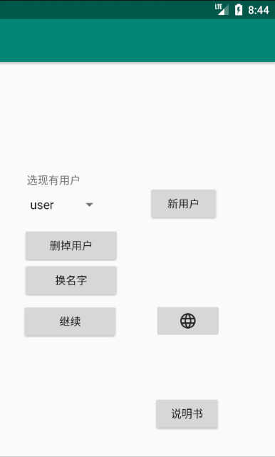
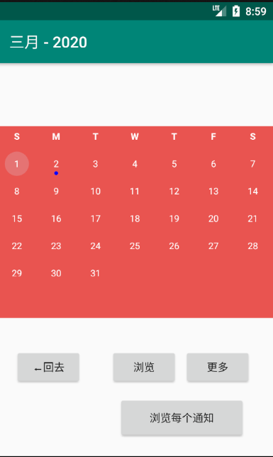
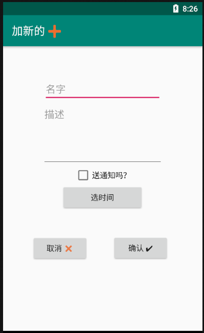
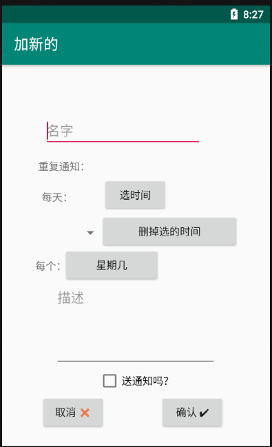
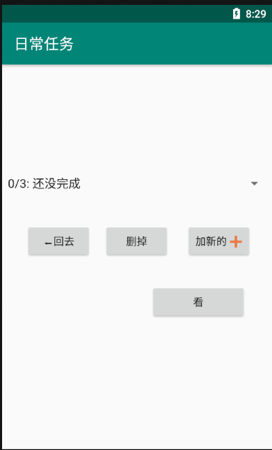
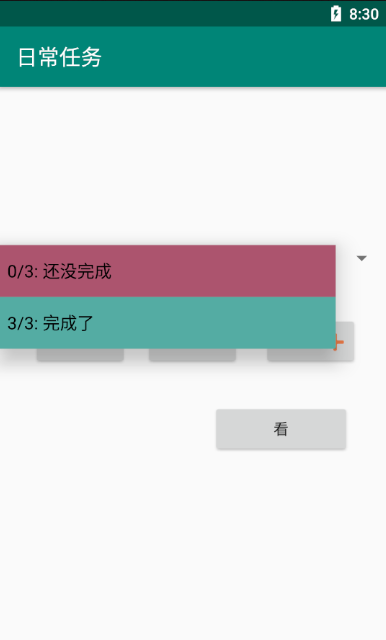
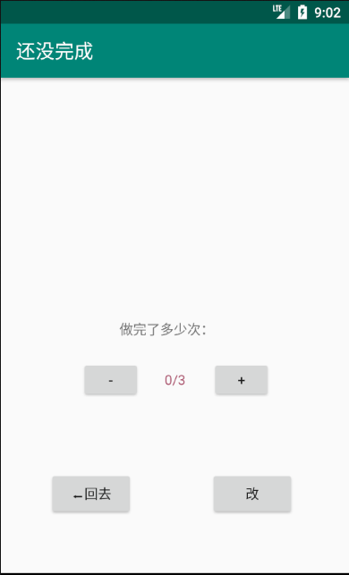
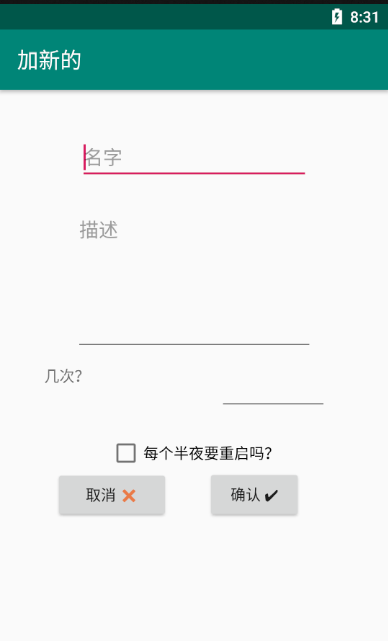

主页

点 加新用户 加新的用户.
点 🌐 换语言.
从菜单里选一个用户, 然后
点 换名字 换用户的名字。
点 删掉用户, 打开删掉用户的对话框.
点 继续 从菜单里选一个用户, 然后继续到下一个屏幕.
日历

日历用蓝色突出有通知的日期。当一个通知来的时候，（通知的设置已经打开了），一个对话框会在这里出现。
向左/向右滑动可使日历在月份之间滚动。
点 回去 回去到主页
点 浏览 选选定的日期。然后你可以浏览这个日期的每个通知，或者为这个日期加新的通知。你不能选已经过去的通知。
点 更多 加日常任务或者重复的通知。
点 浏览每个通知 在一页里浏览每个通知。
加新的通知
一般的通知。当它被激活的时候，它会送一个对话框，然后把自己删掉。

把你的通知的名字写在 名字 方框里. 每个通知必须有一个名字. 在一个日期里两个通知不能用同样的名字。
把你通知的描述写在 描述 方框里. 这部分是可选的。
把 送通知 复选框打对勾。当这个通知被激活的时候，它会送个通知对话方框。
用 选时间按键选什么时候激活你的通知。默认是半夜。
点 确认 创造你的通知, 或者 取消 回去。
点日历里的更多使让你浏览重复的通知 和 日常任务。
加重复的通知
如果你想设一个重复的通知，用这个选项。当它被激活的时候，他会自动重设。

把你的重复通知的名字写在 名字 方框里。每个重复通知必须有一个独特的名字。
点 选时间 给清单加一个你想让你的通知激活的时间。如果没有选择时间，程序会自动设置成半夜。
从菜单里选个时间，然后点 删除选定的时间 删除选定的时间。
点 星期几 选择需要这个通知被激活的那些星期几。最少要选择一个星期几。
把通知的描述写在 描述 方框里。 这部分是可选的。
给 送通知 方框打对勾。这样， 当它被激活的时候，会送一个通知。当通知被激活的时候，它会自动重设。
点 确认 创造这个通知, 或者 取消 返回。
日常任务


已完成的任务用绿色标出。没完成的任务用红色标出。
选一个任务，然后点 浏览 调整进度。
浏览日常任务

用 - 和 + 电键调整任务进度。
点 改 改变任务。
加日常任务

把任务的名字写在 名字 方框里。每个任务得有个独特名字。
把任务的描述写在 描述 方框里。这个部分是可选的。
把你想让这个任务被完成多少次 几次 方框里。必须是一个正整数。
给 每个半夜要重启吗 方框打对勾，这个任务的进度会每个半夜重启到零。如果你不给这个方框打对勾，这个任务永不会自己重启。
点 确认 创造这个任务，或者 取消 回去。